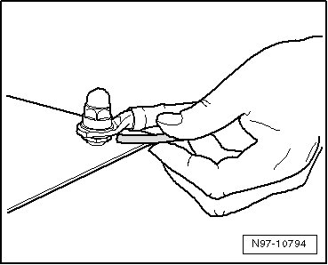
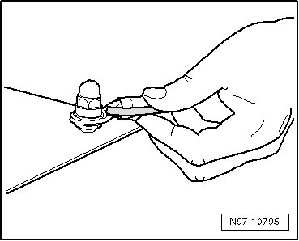
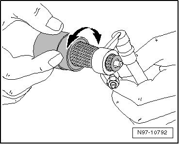
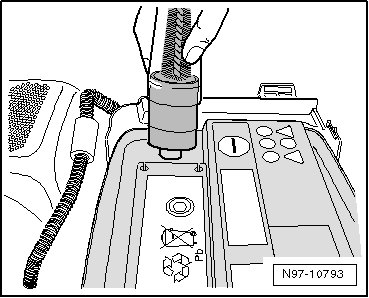
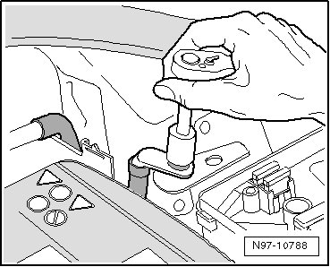
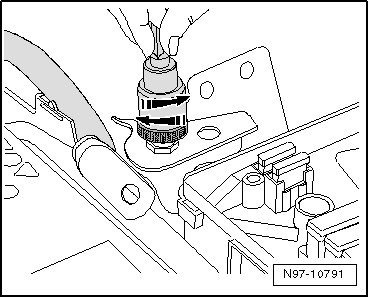
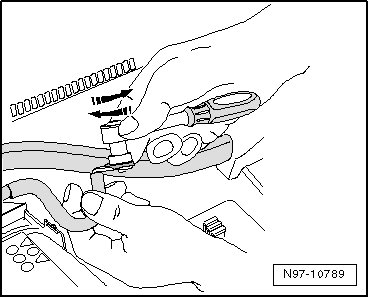
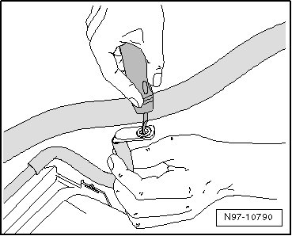
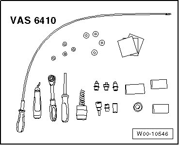

Contact Surface Cleaning Set VAS 6410
Contact Surface Cleaning Set VAS 6410
Protecting
CAUTION!
Missing protection leads to the electrical system damage.
• All threaded connections must be tightened to the specified torque.
• When applying protection, always use the accompanying hose on the protection container.
• Protection wax is used in the cool area.
• Cavity protection wax is used in the warm area.
• The protection material draws itself into the affected places by capillary action.
- Hold the injector under the wiring eyelet and spray all around the pins.

- Hold the injector above the wiring eyelet and spray all around the pins and wiring eyelet.

Battery Terminal Clamp and Battery Terminal, Cleaning
Special tools, testers and auxiliary items required
• Torque Wrench (VAG 1331)
• Do not use rust remover, contact spray or grease because the lack of friction will cause the torque to be exceeded when installing and this will lead to the threaded connection breaking.
CAUTION!
Risk of injury. Observe warning notes and safety precautions. Refer to --> [ Battery Safety Precautions ] Battery Safety Precautions!
- Disconnect the battery.
- Check the battery terminal clamp and terminal for corrosion or contamination.
- The battery terminal clamp is cleaned with the battery terminal cleaner wire brush using circular motions.

- The battery terminal is cleaned with the bottom side of the terminal cleaner using circular motions.

CAUTION!
Risk of injury. Observe warning notes and safety precautions. Refer to --> [ Battery Safety Precautions ] Battery Safety Precautions!
- Reconnect the battery and tighten the terminals to the specified torque.
• Optimal contact is ensured if the bolted components are tightened to the specified torque after cleaning.
Threaded Connections, Repairing
Special tools, testers and auxiliary items required
• Torque Wrench (VAG 1331)
• Do not use rust remover, contact spray or grease because the lack of friction will cause the torque to be exceeded when installing and this will lead to the threaded connection breaking.
• The gray sanding pads are for slight contamination and suitable for "soft surfaces". The red sanding pads are for heavy contamination and suitable for "hard surfaces".
CAUTION!
Risk of injury. Observe warning notes and safety precautions. Refer to --> [ Battery Safety Precautions ] Battery Safety Precautions!
- Disconnect battery.
- Loosen the cap nut and remove the wiring eyelet from the threaded connection.

- Check the threaded connection for corrosion, contamination, etc.
- Select the corresponding adapter and the corresponding sanding pad for the threaded connection.
CAUTION!
Make sure the tin layer is not worn down too much and the copper is not visible. A galvanic element can form from this, destroying the metal and causing incorrect repairs.
• Due to the different thicknesses of the tin layer, the cleaning process must be performed in several steps and a visual inspection of the wiring eyelet between steps is necessary.
- Place the adapter on the threaded connection and sand off the corrosion and contaminants with circular movements.

- Check the threaded connection and resand it if necessary.
- Retighten the connection and, if necessary, the anti-rotation protection to the specified torque. Wiring diagrams, Troubleshooting & Component locations.
• Optimal contact is ensured if the bolted components are tightened to the specified torque after cleaning.
- Protect the threaded connection with the corresponding protection material.
- Reconnect the battery.
CAUTION!
Risk of injury. Observe warning notes and safety precautions. Refer to --> [ Battery Safety Precautions ] Battery Safety Precautions!
- Reprogram the window regulators, enter the radio code, set the clock and, if necessary, recode control modules that have error messages.
Wiring Eyelets
Special tools, testers and auxiliary items required
• Torque Wrench (VAG 1331)
• Do not use rust remover, contact spray or grease because the lack of friction will cause the torque to be exceeded when installing and this will lead to the threaded connection breaking.
• The gray sanding pads are for slight contamination and suitable for "soft surfaces". The red sanding pads are for heavy contamination and suitable for "hard surfaces".
CAUTION!
Risk of injury. Observe warning notes and safety precautions. Refer to --> [ Battery Safety Precautions ] Battery Safety Precautions!
- Disconnect battery.
- Loosen the cap nut and remove the wiring eyelet from the threaded connection.
- Check the wiring eyelet for corrosion, contamination, etc.
- Select the corresponding adapter and the corresponding sanding pad.
• The sanding block can be used instead.
CAUTION!
Make sure the tin layer is not worn down too much and the copper is not visible. A galvanic element can form from this, destroying the metal and causing incorrect repairs.
• Due to the different thicknesses of the tin layer, the cleaning process must be performed in several steps and a visual inspection of the wiring eyelet between steps is necessary.
- Insert the adapter in the wiring eyelet and sand off the corrosion and contamination with circular motions.

- Check the wiring eyelet and resand it if necessary.
- If necessary, remove the burr on the wiring eyelet with the deburrer.

- Reinstall the wiring eyelet with the specified torque, refer to Wiring diagrams, Troubleshooting & Component locations.
• Optimal contact is ensured if the bolted components are tightened to the specified torque after cleaning.
- Protect the connection with the corresponding protection material.
- Reconnect the battery.
CAUTION!
Risk of injury. Observe warning notes and safety precautions. Refer to --> [ Battery Safety Precautions ] Battery Safety Precautions!
- Reprogram the window regulators, enter the radio code, set the clock and, if necessary, recode control modules that have error messages.
Using Contact Surface Cleaning Set VAS 6410
The Repair Set (VAS 6410) enables optimal repair quality in the electrical system area. Using the tools, service work can be performed in the area of the contact sensor on the threaded connection wiring harnesses in the high current circuit (starter and charging current). The Repair Set (VAS 6410) is adapted to the vehicle's structural measurements and ensures correct servicing and a comfortable procedure.
• The illustrations of the service work only serve as examples.
Repair Set VAS 6410
